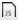

Report editor#
Here you can find brief information about the Report editor.
A click on the Edit report button opens the editor.
The editor's toolbar has several sections that provide:
- Formatting tools
- Tools for work with tags and expressions
The formatting tools are standard text editor instruments. You can configure such properties like fonts, and their size, colour of a text, style of a paragraph, and so on. Also, you can insert ordered and unordered lists, images, tables and special characters.
Tools for data representation include:
- Analog Chart
- Digital Chart
- Tag Label
- Pie Chart
- Tags Table
- XY Chart
- SpeedoMeter
The tools from the list above visualise tag history.
Note
The Creating an Analogue chart task will show you how to configure these elements.
For custom calculations you can create expressions. Click the Expression icon  to open the Create Expression dialogue window.
Note
See the List of Report expressions for detailed information.
There is a keyboard shortcut that helps users to type correct expressions. The combination of ctrl+space keys displays a list of possible expressions to put in the current cursor's position.
Parent article:
- Reports
This article describes the expressions used in the Report module.
Related articles:
- List of Report expressions
This article describes the expressions used in the Report module. - Creating an analogue chart
This task shows how to create an analogue chart.